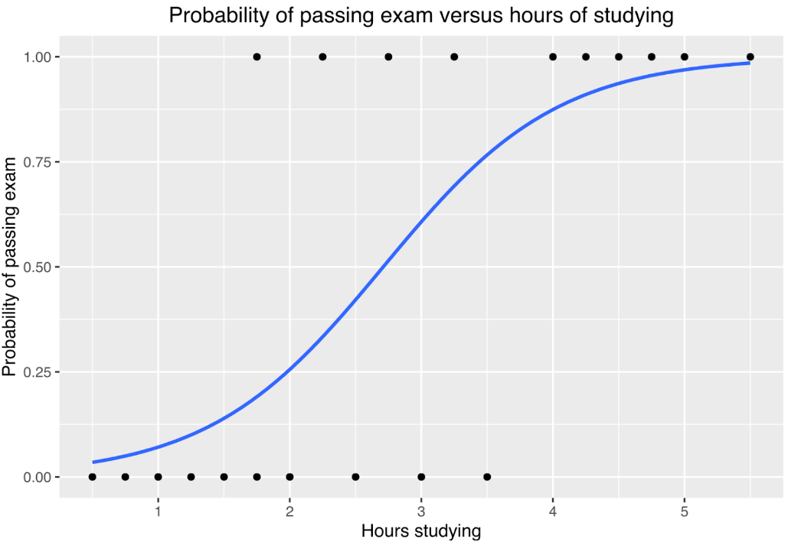
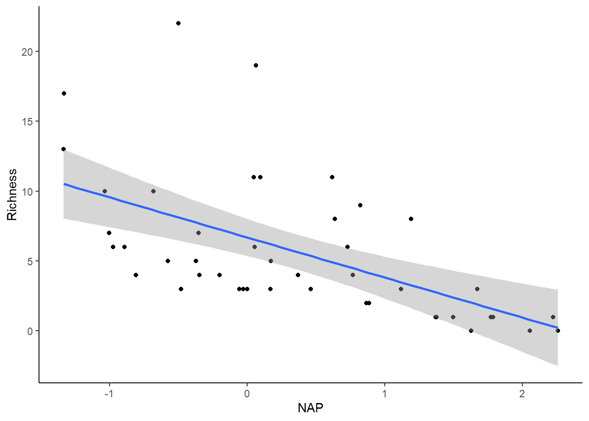
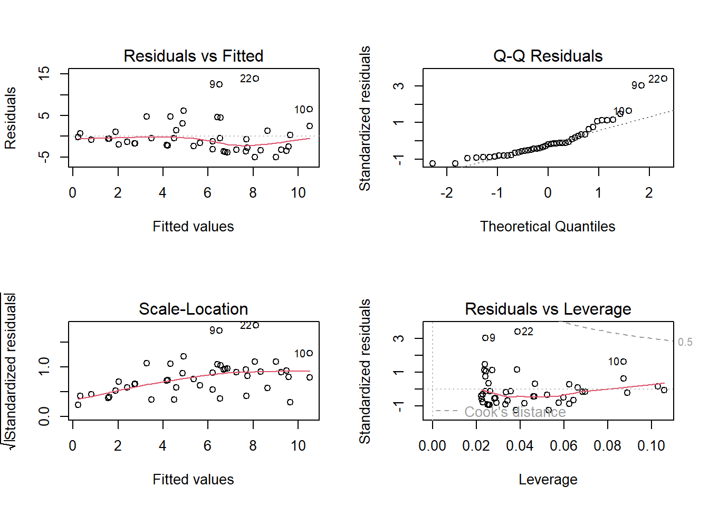
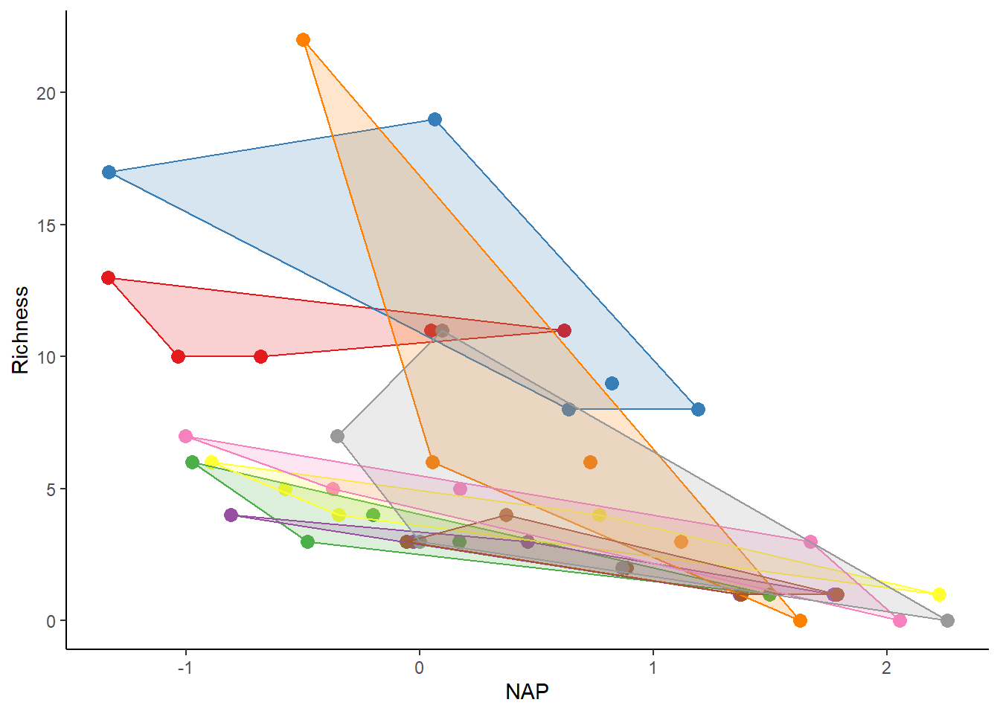
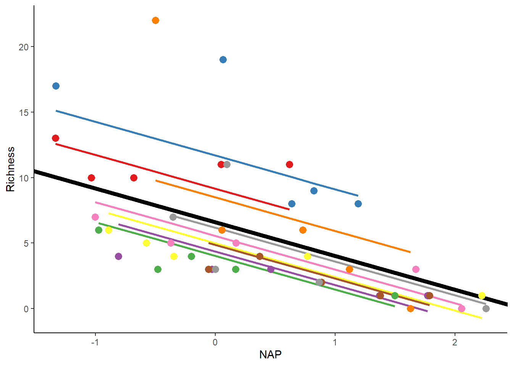
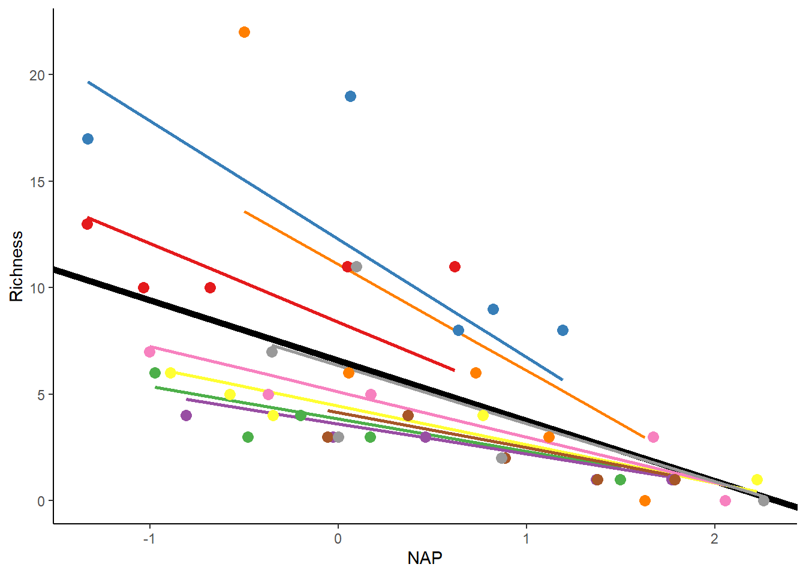
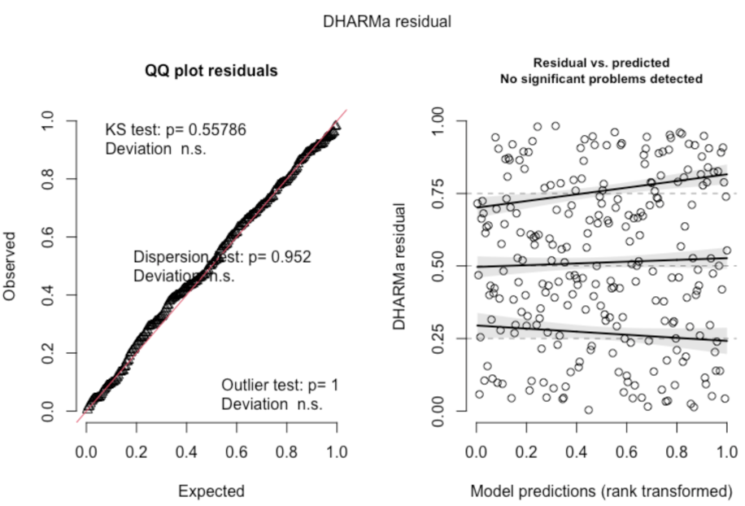
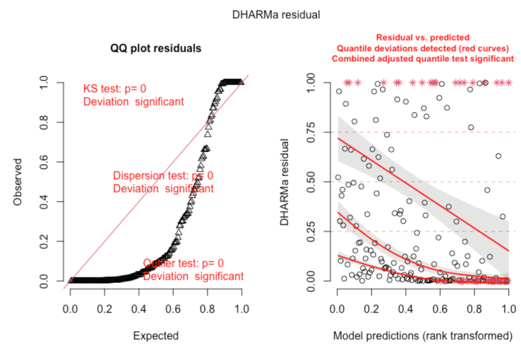
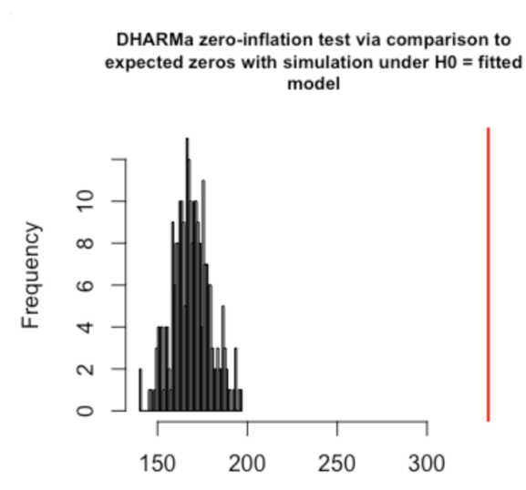

These are the necessary packages we need to run the analysis in this code.
Here is the code for the lecture in case you want to follow along: GLMM.R
A linear model, or linear regression model, is a model that is used to predict the value of a dependent variable given the value of an independent variable. This relationship is represented by a straight line with a slope and an intercept. Linear regression is relatively easy, and provides a pretty intuitive output. However, linear models have some assumptions: continuous variables, normal distribution, constant variance, and a linear relationship between variables. As such, there are limitations to linear models. Generalized linear models, on the other hand, often do not have these limitations.
Generalized linear models (GLMs) are regression models that allow us to express the relationship between the predictors and response variable, even when they are non-linear, by using a data distribution and a link function to transform the data. Different link functions can be used for different distributions of the data, such as “identity” for normal distribution (an example of linear regression, which is technically a type of GLM), “log link” for poisson distribution, or “logit link” for binomial distribution. GLMs also do not require the variables to be continuous. A common example of a GLM is logistic regression, which is used with a binomial or bernoulli data distribution, and a logit function for the link. Below is an illustration of logistic regression used to represent the relationship between how many hours students spent studying and whether they passed or failed an exam (Canley, Wikipedia).

Let’s get a little more complicated. What, then, is a generalized linear mixed effect model?
In any model, we are going to have response and explanatory (predictor) variables. Usually, predictor variables will only explain some of the variation that occurs in the response variable. Especially when we are talking about field studies, it is impossible to collect and control all variables that might influence the response. For example, imagine that we want to understand whether and how a certain hematological parameter in a bird population changes through the year. There are some variables that can directly affect hematological parameters, such as food availability, weather conditions and bird dehydration and these variables are sometimes difficult to collect.
One way to dilute this problem is to increase the number of captured birds, since more data can usually lead to better conclusions. On the other hand, among these birds we can have recaptures and birds with different ages (which is known to also change hematological parameters as well). Thus, more data will also lead to more variation and uncertainty. Even though we expect hematological parameters to vary according to a certain pattern in a bird population, it will not be the same for all individuals, since they have different diets, different levels of dominance, different workloads; also, blood parameters vary according to the time of the day, dehydration level, etc. Furthermore, when we think in recaptures, it is expected that parameters from the same bird will be more alike than parameters from different birds.
Although recaptures can increase the number of individuals measured, it violates the independence of observations that is one of the main assumptions of a linear regression. Thus, besides the fixed effect (variation through the year) there is a random effect (individual variation) occurring in these hematological parameters.
While collecting our data, it is virtually impossible to get enough information or understand how these random effects will affect our model. However, there are statistical procedures that we can use that not only take into account these random effects, but also make it possible to analyze this kind of collected data. These models that have both kinds of effects are known as mixed effect models.
Although the answer for this question seems to be very simple, identifying random effects within our data is not an easy task. First thing to bear in mind is that a continuous variable cannot be a random effect! Moreover, random effects can affect not just the intercept in our models, but also the slope and understanding how and when to use these statistical approaches is key to use mixed effect models in the right way. We believe that the best way to understand the concept is with some hypothetical examples. Let’s imagine that we are going to capture and get hematological parameters, such as hemoglobin concentration, from a certain bird species during a whole year.
For the purpose of this example, we are only going to get parameters from males, not females. Our main goal is to understand whether birds make physiological adjustments and the reason for it. To capture these birds, we are going to use mist nests, which means that we are going to collect blood samples from every single male bird that we capture. Once we can’t control the birds that are going to be captured and since we are going to focus on only one population, some birds are going to be recaptured at some points during the year and these recaptures can occur at any time: next day, week, month, etc. As we already know, repeated measures from the same individuals will not be independent, since they are not true replicates, but pseudoreplicates instead.
From a previous behavioral study, we know that dominant males will have access to better resources during the whole year: better food, better and larger territories and better females. Although we know that to be dominant these males need to be bigger, there is not a known variable that we can collect to be 100% sure that one individual is dominant or not. We expect that hemoglobin levels are going to increase during the breeding season, since males will be more active to protect their territories, protect females and rear chicks for all birds. However, will it increase in the same way for both dominants and “less dominant” males?
Let’s identify our variables for this example: our response variable is going to be the “hemoglobin” of the birds, while our predictor (fixed) variable is going to be “the 4 seasons of the year”. Note: we might have recaptures! Since dominant and less dominant birds might differ in their baseline levels, giving each bird a different intercept, considering the individual ID can help with this as well. One more thing we need to consider: we know that hemoglobin might change in spite of dominance level; but will it change in exactly the same way for dominants and less dominants? If this is true, not just the intercept, but the slope might be under a random effect as well.
In the lab portion, you will have the chance to work with this hypothetical example and see if you considered the right variable(s) as a random effect! Furthermore, in the demo we are going to show in the class we are going to see how the model treats the predictors differently for fixed and random effects.
There are some different packages available in R to use for mixed effects models. “lme4”, “lmerTest”, “nlme”, and “glmmTMB” are the ones that can be utilized.
For instance, using the “lmerTest” package, this is the syntax you need to use when you have a:
Random_intercept <- lmer(Response ~ Fixed_Predictor + (1|Random_Predictor), data = data, REML = FALSE);
Random_intercept&slope <- lmer(Response ~ Fixed_Predictor + (1+ Fixed_Predictor|Random_Predictor), data = data, REML = FALSE) obs: REML = FALSE is to give the likelihood values.
Marine benthic data comes from Zuur et al. (2007).
Marine benthic data from nine inter-tidal areas along the Dutch coast. The data were collected by the Dutch institute RIKZ in the summer of 2002. In each inter-tidal area (denoted by ‘beach’), five samples were taken, and the macro-fauna and abiotic variables were measured.
Sample: sample number Richness: species richness Exposure: index composed of the surf zone, slope, grain size, and depth of anaerobic layer NAP: height of sampling station compared to mean tidal level Beach: beach identifier
### RIKZ dataset-----------------
#as described in Zuur et al. (2007) and Zuur et al. (2009)
##download data to follow along:
rikz_data <- "https://uoftcoders.github.io/rcourse/data/rikz_data.txt"
download.file(rikz_data, "rikz_data.txt")
rikz_data <- read.table("rikz_data.txt", header = TRUE, sep="\t")
### Data exploration-------------------------
str(rikz_data)## 'data.frame': 45 obs. of 5 variables:
## $ Richness: int 11 10 13 11 10 8 9 8 19 17 ...
## $ Exposure: int 10 10 10 10 10 8 8 8 8 8 ...
## $ NAP : num 0.045 -1.036 -1.336 0.616 -0.684 ...
## $ Beach : int 1 1 1 1 1 2 2 2 2 2 ...
## $ Site : int 1 2 3 4 5 1 2 3 4 5 ...## 'data.frame': 45 obs. of 5 variables:
## $ Richness: int 11 10 13 11 10 8 9 8 19 17 ...
## $ Exposure: int 10 10 10 10 10 8 8 8 8 8 ...
## $ NAP : num 0.045 -1.036 -1.336 0.616 -0.684 ...
## $ Beach : Factor w/ 9 levels "1","2","3","4",..: 1 1 1 1 1 2 2 2 2 2 ...
## $ Site : int 1 2 3 4 5 1 2 3 4 5 ...## Richness Exposure NAP Beach Site
## 1 11 10 0.045 1 1
## 2 10 10 -1.036 1 2
## 3 13 10 -1.336 1 3
## 4 11 10 0.616 1 4
## 5 10 10 -0.684 1 5
## 6 8 8 1.190 2 1We have encoded ‘Beach’ as a factor, which will facilitate plotting and its use as a random effect downstream.
Let’s perform a linear regression to examine the relationship between species richness and NAP, pooling data across all beaches.
### Run basic linear model using all of the data--------------------
basic.lm <- lm(Richness~ NAP, data = rikz_data)
summary(basic.lm)##
## Call:
## lm(formula = Richness ~ NAP, data = rikz_data)
##
## Residuals:
## Min 1Q Median 3Q Max
## -5.0675 -2.7607 -0.8029 1.3534 13.8723
##
## Coefficients:
## Estimate Std. Error t value Pr(>|t|)
## (Intercept) 6.6857 0.6578 10.164 5.25e-13 ***
## NAP -2.8669 0.6307 -4.545 4.42e-05 ***
## ---
## Signif. codes: 0 '***' 0.001 '**' 0.01 '*' 0.05 '.' 0.1 ' ' 1
##
## Residual standard error: 4.16 on 43 degrees of freedom
## Multiple R-squared: 0.3245, Adjusted R-squared: 0.3088
## F-statistic: 20.66 on 1 and 43 DF, p-value: 4.418e-05Based on the model output provided, it appears that there is a significant negative association between NAP and species richness (Estimate < 0). Let’s visualize this relationship by creating a plot.
library(ggplot2)
# Plot relationship from above model
ggplot(rikz_data, aes(x = NAP, y = Richness)) +
geom_point() +
geom_smooth(method = "lm") +
theme_classic()## `geom_smooth()` using formula = 'y ~ x'
Before placing confidence in this outcome, it’s important to verify whether the assumptions of the linear regression are satisfied.
We can achieve this by plotting the residuals against the fitted values to assess homogeneity and independence, as well as creating a QQ-plot to examine normality

The first and third panels show a violation of the homogeneity assumption, with increasing residual variance at higher fitted values. Panel 2 suggests non-normality, indicated by points deviating from the dotted line. Despite these compromised assumptions, we’ll disregard these violations to better illustrate mixed-effects modeling strategies on untransformed data.
The species richness data come from multiple sites across various beaches. Although each beach may demonstrate independence, sites within a given beach likely share similar species richness due to their proximity, indicating nested data. This nesting is a result of the experimental design, specifically the decision to sample five sites within each beach, rather than an inherent property of the data.
To visually depict the non-independence of observations within the same beach, we can create a figure similar to the one above, with clusters differentiated by beach (each beach represented by a different color).
# Function to find polygons
find_hull <- function(df) df[chull(df$Richness, df$NAP), ]
# Identify polygons in data
library(plyr)
hulls <- ddply(rikz_data, "Beach", find_hull)
# Plot
ggplot(rikz_data, aes(x = NAP, y = Richness, colour = Beach)) +
geom_point(size = 3) +
theme_classic() +
theme(legend.position = "none") +
scale_colour_brewer(palette="Set1") +
scale_fill_brewer(palette="Set1") +
geom_polygon(data=hulls, aes(fill = Beach), alpha = 0.2)
Observations from the same beach usually group together. In an independent scenario, these groups would completely overlap. However, in reality, observations within a specific beach are more similar to each other than to observations from other beaches. It’s crucial to consider and manage this non-independence in our modeling approach.
To deal with this non-independence, we could analyze each beach separately. However, this is limited by a small sample size (only 5 points per analysis) and the requirement for multiple tests, increasing the risk of getting false significant results by chance. This method is not ideal. Instead, a better approach is to include a term for the beach directly in our model, enabling us to estimate its effects more reliably.
##
## Call:
## lm(formula = Richness ~ NAP + Beach, data = rikz_data)
##
## Residuals:
## Min 1Q Median 3Q Max
## -4.8518 -1.5188 -0.1376 0.7905 11.8384
##
## Coefficients:
## Estimate Std. Error t value Pr(>|t|)
## (Intercept) 9.8059 1.3895 7.057 3.22e-08 ***
## NAP -2.4928 0.5023 -4.963 1.79e-05 ***
## Beach2 3.0781 1.9720 1.561 0.12755
## Beach3 -6.4049 1.9503 -3.284 0.00233 **
## Beach4 -6.0329 2.0033 -3.011 0.00480 **
## Beach5 -0.8983 2.0105 -0.447 0.65778
## Beach6 -5.2231 1.9682 -2.654 0.01189 *
## Beach7 -5.4367 2.0506 -2.651 0.01196 *
## Beach8 -4.5530 1.9972 -2.280 0.02883 *
## Beach9 -3.7820 2.0060 -1.885 0.06770 .
## ---
## Signif. codes: 0 '***' 0.001 '**' 0.01 '*' 0.05 '.' 0.1 ' ' 1
##
## Residual standard error: 3.06 on 35 degrees of freedom
## Multiple R-squared: 0.7025, Adjusted R-squared: 0.626
## F-statistic: 9.183 on 9 and 35 DF, p-value: 5.645e-07The model estimates a unique effect for each beach, using up 8 degrees of freedom. While this didn’t significantly change our understanding of NAP’s impact on richness (which remains negative and significant), adding more terms could affect the interpretation of other aspects in the model. Even though these beaches are a random subset, we still need to consider the non-independence of observations within beaches, making random effects important.
We want to avoid using 8 degrees of freedom for the ‘Beach’ term in our model. Yet, we still need to estimate the variance among beaches and consider the non-independence of sites within them. To do this, we can treat ‘Beach’ as a random effect while keeping ‘NAP’ as a fixed effect. This way, we establish a unique y-intercept for each beach (Richness at NAP = 0) and calculate the variance around this intercept. A small variance suggests little variability per beach, while a large variance indicates the opposite. We can implement this approach using mixed-effects models with the lmer function from the lme4 R package and obtain parameter estimates using the lmerTest package.
The question we are now asking is: What is the influence of NAP on species richness while accounting for variation within beaches?
## Loading required package: Matrixmixed_model_IntOnly <- lmer(Richness ~ NAP + (1|Beach),
data = rikz_data, REML = FALSE)
summary(mixed_model_IntOnly)## Linear mixed model fit by maximum likelihood ['lmerMod']
## Formula: Richness ~ NAP + (1 | Beach)
## Data: rikz_data
##
## AIC BIC logLik deviance df.resid
## 249.8 257.1 -120.9 241.8 41
##
## Scaled residuals:
## Min 1Q Median 3Q Max
## -1.4258 -0.5010 -0.1791 0.2452 4.0452
##
## Random effects:
## Groups Name Variance Std.Dev.
## Beach (Intercept) 7.507 2.740
## Residual 9.111 3.018
## Number of obs: 45, groups: Beach, 9
##
## Fixed effects:
## Estimate Std. Error t value
## (Intercept) 6.5844 1.0321 6.380
## NAP -2.5757 0.4873 -5.285
##
## Correlation of Fixed Effects:
## (Intr)
## NAP -0.164The term (1|Beach) represents the random effect, where ‘1’ signifies a random-intercept model, and what follows the ‘|’ denotes a nominal variable used as the random effect, in this case, ‘Beach.’ It’s crucial to note that best practice recommends having at least 5 levels for random effects, and fortunately, we meet this criterion with 9 levels for ‘Beach.’
The output indicates that the model was fitted using maximum likelihood, and parameters were estimated using the Satterthwaite approximation. It provides AIC, BIC, and log-likelihood values specific to this model.
An important part of the output details the estimated variance for the random effects, showing that the variance linked to the ‘Beach’ effect is 7.507. In other words, differences between beaches contribute to 45% of the residual variance after considering fixed effects. It’s crucial to understand that the denominator here is the total variance, including the sum of variance components from all random effects, including residuals.
Finally, the output includes the fixed effect components of the model, presenting separate intercept, slope, and P-value for the effect of ‘NAP.’ We can now move on to visualize the fitted values for this model.
# Let's predict values based on our model and add these to our dataframe
# These are the fitted values for each beach, which are modelled separately.
rikz_data$fit_InterceptOnly <- predict(mixed_model_IntOnly)
# Let's plot
ggplot(rikz_data, aes(x = NAP, y = Richness, colour = Beach)) +
# Add fixed effect regression line (i.e. NAP)
geom_abline(aes(intercept = `(Intercept)`, slope = NAP),
linewidth = 2,
as.data.frame(t(fixef(mixed_model_IntOnly)))) +
# Add fitted values (i.e. regression) for each beach
geom_line(aes(y = fit_InterceptOnly), size = 1) +
geom_point(size = 3) +
theme_classic() +
theme(legend.position = "none") +
scale_colour_brewer(palette="Set1")## Warning: Using `size` aesthetic for lines was deprecated in ggplot2 3.4.0.
## ℹ Please use `linewidth` instead.
## This warning is displayed once every 8 hours.
## Call `lifecycle::last_lifecycle_warnings()` to see where this warning was
## generated.
The thick black line shows the fitted values for the fixed-effect part of the model. On the other hand, the thin colored lines depict the fitted values for each beach, each with unique intercepts as expected. If the estimated variance of the random effect increases, these lines would spread more around the thick black line. When the variance is 0, all the colored lines would precisely match the thick black line.
The previous model allows the intercept for each beach to change around the overall population-level intercept. However, what if the differences among beaches go beyond just the average richness, and how richness responds to NAP varies on each beach? In standard regression terms, this would mean adding NAP, Beach, and NAP x Beach effects to the model. However, including these fixed effects would use up a lot of degrees of freedom, and since we’ve already decided that differences between beaches are not our main focus, this approach is not ideal.
Luckily, there’s another option. We can still consider variations in how beaches react to NAP by using a random intercept-slope model.
We can fit the random intercept-slope model to these data using the code below…
# Random intercept and slope model
mixed_model_IntSlope <- lmer(Richness ~ NAP + (1 + NAP|Beach),
data = rikz_data, REML = FALSE)## boundary (singular) fit: see help('isSingular')## Linear mixed model fit by maximum likelihood ['lmerMod']
## Formula: Richness ~ NAP + (1 + NAP | Beach)
## Data: rikz_data
##
## AIC BIC logLik deviance df.resid
## 246.7 257.5 -117.3 234.7 39
##
## Scaled residuals:
## Min 1Q Median 3Q Max
## -1.7985 -0.3418 -0.1827 0.1749 3.1389
##
## Random effects:
## Groups Name Variance Std.Dev. Corr
## Beach (Intercept) 10.949 3.309
## NAP 2.502 1.582 -1.00
## Residual 7.174 2.678
## Number of obs: 45, groups: Beach, 9
##
## Fixed effects:
## Estimate Std. Error t value
## (Intercept) 6.5818 1.1883 5.539
## NAP -2.8293 0.6849 -4.131
##
## Correlation of Fixed Effects:
## (Intr)
## NAP -0.810
## optimizer (nloptwrap) convergence code: 0 (OK)
## boundary (singular) fit: see help('isSingular')The model above allows for variations in both the starting point and the slope of the relationship between Richness and NAP across different beaches. The only difference is the addition of an extra variance component in the random effects, which measures the variation in slopes among beaches. It also includes a correlation term (Cor), estimating the connection between the variations in starting points and slopes. A value of -1 suggests that beaches with higher starting points also have more noticeably negative slopes, as shown in the figure.
rikz_data$fit_IntSlope <- predict(mixed_model_IntSlope)
ggplot(rikz_data, aes(x = NAP, y = Richness, colour = Beach)) +
geom_abline(aes(intercept = `(Intercept)`, slope = NAP),
size = 2,
as.data.frame(t(fixef(mixed_model_IntSlope)))) +
geom_line(aes(y = fit_IntSlope), size = 1) +
geom_point(size = 3) +
theme_classic() +
theme(legend.position = "none") +
scale_colour_brewer(palette="Set1")
It’s important to recognize that specifying fixed effects is not always mandatory, just as it is not always essential to specify random effects.
For example, we could run the following model…
mixed_model_NoFix <- lmer(Richness ~ 1 + (1|Beach),
data = rikz_data, REML = TRUE)
summary(mixed_model_NoFix)## Linear mixed model fit by REML ['lmerMod']
## Formula: Richness ~ 1 + (1 | Beach)
## Data: rikz_data
##
## REML criterion at convergence: 261.1
##
## Scaled residuals:
## Min 1Q Median 3Q Max
## -1.7797 -0.5070 -0.0980 0.2547 3.8063
##
## Random effects:
## Groups Name Variance Std.Dev.
## Beach (Intercept) 10.48 3.237
## Residual 15.51 3.938
## Number of obs: 45, groups: Beach, 9
##
## Fixed effects:
## Estimate Std. Error t value
## (Intercept) 5.689 1.228 4.631Now that we have outlined these three different models, how do we decide which one to choose? After all, they all provide slightly different estimates for the effects of NAP (assuming NAP is included) and P-values.
There are a few different ways to select a model. The most common model selection approach is AIC (Akaike information criterion). As we recently discussed in this class, AIC values represent the distance between your model and the “true” model. AIC values are an estimate of the amount of information lost by your model, so the lower the number (relatively), the better. To estimate this, AIC balances the goodness-of-fit and the simplicity of the model. A model with all of the possible variables may be the “best” fit, but is not necessarily the correct choice, as it could be overfitting the data. AIC takes this into account by penalizing added variables in order to find the balance. AIC values do not mean anything on their own, and should be used only for comparison between models. You can compare AIC values of different models in R using the AIC() function.
Another model selection approach is BIC (Bayesian information criterion), which is very similar to AIC. Like AIC, the lower the BIC value (relatively), the better. The difference between AIC and BIC is that the penalty for added variables is greater for BIC, so simpler models are even more favored with BIC than AIC. You can compare BIC values in R using the BIC() function.
Finally, you could use a likelihood ratio test (LRT) for model selection. The LRT can be used to compare the goodness of fit of two models, generally a more complex model and a simpler model, which will include some subset of the parameters in the more complex model, making it a nested model. This approach is used to see if adding (or removing) additional parameters makes the model a better fit. You can perform the LRT manually, as we learned in this class, or you can use the lrtest() function from the lmtest package. The output of this function will give you a chi-squared test statistic, and a p-value. If the p-value is less than your critical value (0.05, for example), the full model is a better fit. If the p-value is more than the critical value, the full model and nested model fit the data equally well, so you would want to use the nested model, since it is more simple.
We created three models:
A random intercept model featuring NAP as a fixed effect, with the random effect enabling variability in the intercept (species richness) across beaches. A random intercept and slope model, incorporating NAP as a fixed effect, and allowing both the intercept (richness) and slope (response of richness to NAP) to vary among beaches. An intercept-only model with no fixed effects but permitting variation in richness across beaches.
Given these three models, we might want to figure out which one fits our observed data best, allowing us to interpret the model and make inferences about our population.
Let’s create two models, this time adding an interaction between NAP and Exposure as extra effects.
Start with a saturated model that includes all fixed effects and their interactions, along with random effects. If including all fixed effects is not practical, prioritize the ones you consider most crucial based on your understanding of the system. Optimize the random-effect structure of the model using the saturated model. Compare models with a saturated fixed-effects structure to those with different random-effect structures. Fit the models using Restricted Maximum Likelihood (REML = TRUE) and determine the best random-effect structure by choosing the one with the lowest AIC.
# Define 2 models. Fit both with REML.
mixed_model_IntOnly <- lmer(Richness ~ NAP*Exposure + (1|Beach), REML = TRUE,
data = rikz_data)
mixed_model_IntSlope <- lmer(Richness ~ NAP*Exposure + (1 + NAP|Beach), REML = TRUE,
data = rikz_data)## boundary (singular) fit: see help('isSingular')## df AICc
## mixed_model_IntOnly 6 235.2327
## mixed_model_IntSlope 8 237.2527The output suggests that using only a random intercept fits the data better (resulting in a lower AICc). So, the best random-effect structure includes only a random intercept for each beach, without adding a random slope.
The next step is to adjust the model with the best random-effect structure using Maximum Likelihood (ML) and compare different fixed-effect structures. Let’s fit these models below and check their AICcs.
# Full model with both fixed effects and their interaction
mixed_model_IntOnly_Full <- lmer(Richness ~ NAP*Exposure + (1|Beach), REML = FALSE,
data = rikz_data)## boundary (singular) fit: see help('isSingular')# No interaction
mixed_model_IntOnly_NoInter <- lmer(Richness ~ NAP + Exposure + (1|Beach),
REML = FALSE,
data = rikz_data)## boundary (singular) fit: see help('isSingular')# No interaction or main effect of exposure
mixed_model_IntOnly_NAP <- lmer(Richness ~ NAP + (1|Beach),
REML = FALSE,
data = rikz_data)
# No interaction or main effect of NAP
mixed_model_IntOnly_Exp <- lmer(Richness ~ Exposure + (1|Beach),
REML = FALSE,
data = rikz_data)
# No fixed effects
mixed_model_IntOnly_NoFix <- lmer(Richness ~ 1 + (1|Beach),
REML = FALSE,
data = rikz_data)
AICc(mixed_model_IntOnly_Full, mixed_model_IntOnly_NoInter,
mixed_model_IntOnly_NAP, mixed_model_IntOnly_Exp,
mixed_model_IntOnly_NoFix)## df AICc
## mixed_model_IntOnly_Full 6 236.5947
## mixed_model_IntOnly_NoInter 5 238.1467
## mixed_model_IntOnly_NAP 4 250.8291
## mixed_model_IntOnly_Exp 4 261.7996
## mixed_model_IntOnly_NoFix 3 269.8889From the output, it seems that the model including NAP, Exposure, and their interaction provides the best fit to the data.
## Linear mixed model fit by REML ['lmerMod']
## Formula: Richness ~ NAP * Exposure + (1 | Beach)
## Data: rikz_data
##
## REML criterion at convergence: 221
##
## Scaled residuals:
## Min 1Q Median 3Q Max
## -1.4138 -0.4394 -0.1063 0.1511 4.3635
##
## Random effects:
## Groups Name Variance Std.Dev.
## Beach (Intercept) 0.3063 0.5534
## Residual 8.7447 2.9571
## Number of obs: 45, groups: Beach, 9
##
## Fixed effects:
## Estimate Std. Error t value
## (Intercept) 40.7149 5.6164 7.249
## NAP -13.5864 5.4298 -2.502
## Exposure -3.3385 0.5485 -6.087
## NAP:Exposure 1.0625 0.5278 2.013
##
## Correlation of Fixed Effects:
## (Intr) NAP Exposr
## NAP -0.300
## Exposure -0.996 0.301
## NAP:Exposur 0.302 -0.997 -0.306Summarizing the results, an increase in both NAP and Exposure is associated with a decrease in species richness (P < 0.05). Additionally, there is an almost significant interaction between NAP and Exposure. Even though Beach is included as a random effect, there is minimal variation attributed to differences between beaches compared to the previous model. The key difference is the inclusion of Exposure as a fixed effect in the current model. This suggests that a significant part of the variation observed among beaches in lecture 8 was likely influenced by differences in exposure, now captured by the fixed effects.
It is a good idea to make sure your model is a good fit of the data on its own. If you only compare it to other models, it could just be the best-fit out of a bad bunch of models. A good way to evaluate your model is with the DHARMa package in R. DHARMa uses your model to simulate data, and compares this simulated data to the actual data, which is a good way to see how well-fit the model is for the actual data. For example, you can use the simulateResiduals() and testResiduals() functions on your model to come up with plots like this (from the cran DHARMa page).

On the left is a plot of the expected (simulated) and observed (actual) values, which should have a relatively neat linear relationship. In this example, they do. On the right is a plot of the residuals for the predicted values based on the model, and we should expect relatively even, straight, horizontal lines. This would appear to be a pretty well-fit model. What does it look like when there are problems with your model?

In these plots, we can see that there are problems, which DHARMa highlights in red. These plots show signs of overdispersion, meaning there is more variance in the data than expected based on the model, so adjustments should be made to the model. A common type of overdispersion is zero-inflation, when there are more zeros in the data than would be expected given the model. If your model evaluation is showing signs of overdispersion, you may want to check your data distribution - if you haven’t already. The DHARMa package does have a special function for testing zero-inflation: testZeroInflation(). This will give you a plot of the expected distribution of zeros and actual distribution of zeros.

A plot like this is an indication that you may want to use a zero-inflated model.
Note: this isn’t everything the DHARMa package can do for you, but rather covers some of the most common uses. Also, there isn’t a strict rule for how to interpret these results. As stated in the DHARMa manual: “DHARMa only flags a difference between the observed and expected data - the user has to decide whether this difference is actually a problem for the analysis!”